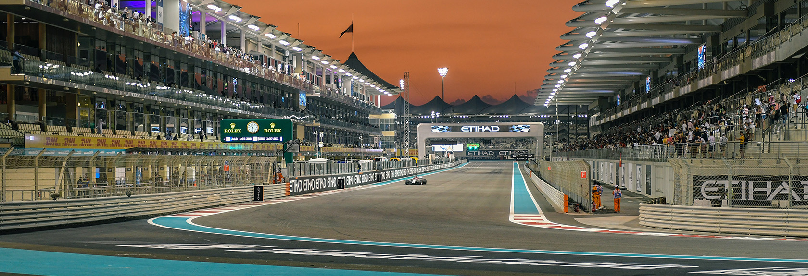

ABU DHABI GRAND PRIX
Cicuit Length:
5.554 km (3.451 mi)
Turns:
21
Number of Laps:
55
First Grand Prix:
2009
Race Distance:
305.355 km
Abu Dhabi's race takes place in Yas Island.This is a Island in Abu Dhabi,
about 2.9 Million people live in Abu Dhabi. And across Abu Dhabi live about 1,45 Million inhabitants. So far the record holder of this circuit is Lewis Hamilton.
This year (2021) the race will be on December 5. The fastest speed last year (2019) was measured at 327.3 km/h.
The most wins on this track are Mercedes, in total they've won 6 times on this track. And the driver with the most wins on this track is Lewis Hamilton with 6 wins to his name.

Winners of the Abu Dhabi GP
2020 - Max Verstappen
2019 - Lewis Hamilton
2018 - Lewis Hamilton
2017 - Valteri Bottas
2016 - Lewis Hamilton
2015 - Nico Rosberg
2014 - Lewis Hamilton
2013 - Sebastian Vettel
2012 - Kimi Räikkönen
2011 - Lewis Hamilton
2010 - Sebastian Vettel
2009 - Sebastian Vettel
2008 - Not Held
2007 - Not Held